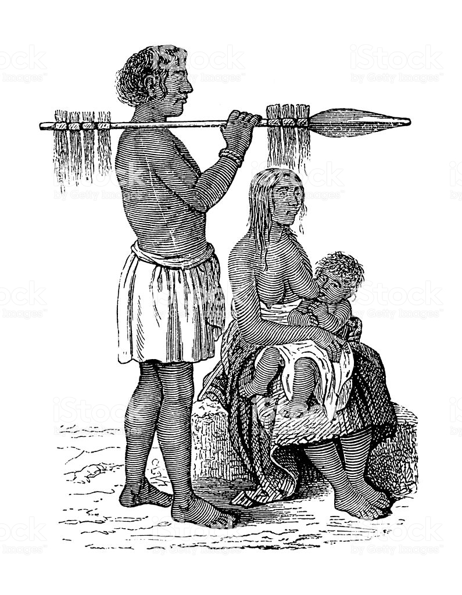

Lenguaje
Su lengua formó parte de la familia lingüística mataco-guaycurú. Ha sido catalogada como un dialecto guaycurú, pero también existe la hipótesis de que haya sido de la subfamilia mataco-mataguaya.
A partir de 1719 los sarigués, cadigué, kadigué o kadigé o en portugués "caduveo" que formaban la rama septentrional de los payaguá en alianza con otros guaycurúes se dedicaron a atacar a los portugueses del Mato Grosso, desplazando a los guató (antes llamados jarayes o xarayes por los españoles) del área del Gran Pantanal. El botín obtenido junto con los esclavos capturados era vendido en Asunción. En 1730 atacaron la flota de Lanhas Peixoto que transportaba el quinto del rey de las minas de oro de Cuyabá hacia San Pablo y que luego vendieron en Asunción.
n:

El grupo meridional llamado tacumbú fue contenido hacia 1750 por el gobernador Rafael de la Moneda, quien fundó una cadena de fuertes a lo largo del río, y terminaron acordando la paz con los españoles e instalándose en las cercanías de Asunción, ciudad que se beneficiaba con la venta de esclavos que hacían los payaguaes. Posteriormente hacia 1770, los cadigué se les unieron, impedidos de atacar a los portugueses por los fuertes que estos fundaron sobre el río Paraguay.
Utilizaban las islas del río Paraguay para enterrar a sus muertos, a los que cubrían sus cabezas con grandes vasijas en forma de campanas.